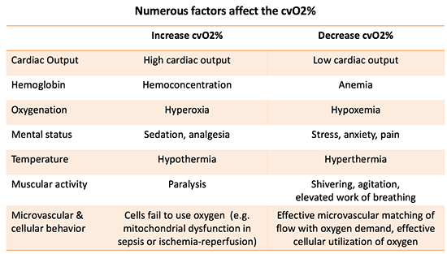
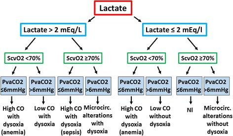

Module N2
Oxygen delivery as the organizing principle
Module N1 left us with a definition, not a measurement: shock is a state in which cellular oxygen use (VO2) is too low to keep the body in homeostasis. The problem is that VO2 is invisible at the bedside, and so is oxygen delivery, which is heterogeneous across organs and genuinely hard to quantify. So the whole enterprise of hemodynamic assessment rests on a single organizing idea. Optimizing oxygen delivery is the premise of shock resuscitation, because in most patients the fastest way to protect a failing VO2 is to defend the delivery that feeds it. Delivery (DO2) is the amount of oxygen the circulation carries to the tissues each minute, and it is simply the product of two things we can reason about: how much oxygen each unit of blood carries, and how much blood flows.
CaO2 = (Hb × 1.34 × SaO2) + (0.003 × PaO2)
so DO2 ≈ CO × Hb × 1.34 × SaO21.34 is Hufner's constant, the mL of O2 carried by one gram of fully saturated hemoglobin. The dissolved term (0.003 x PaO2) is so small it is normally dropped. Normal DO2 is roughly 1000 mL/min.
Written this way, the equation names the only three levers we hold over global delivery. Hemoglobin sets the carrying capacity, so anemia lowers delivery even with perfect lungs and a strong heart. Arterial saturation is the work of the lungs. And cardiac output is the flow. Of the three, the teaching point worth memorizing is that cardiac output and hemoglobin carry the largest influence on DO2, and cardiac output is the lever we can move most quickly and by the most. That is why the rest of hemodynamics is largely the study of defending cardiac output, and why raising hemoglobin sits alongside it as a direct way to lift delivery.
The extraction reserve, and why a falling delivery hides
Here is the part that is both the physiology and the trap. The tissues do not consume all the oxygen that arrives. At rest they extract only about a quarter to a third of it, which is why normal central venous saturation (ScvO2) sits near 70 to 75 percent. That figure is not an accident: rearranging the Fick relationship, ScvO2 is approximately one minus the oxygen extraction ratio, so the venous saturation is a running readout of how hard the tissues are having to pull. The unused three quarters is a buffer. As delivery falls, the tissues protect their consumption by simply extracting more, so VO2 holds flat and the venous saturation quietly drifts down. Across this range consumption is supply-independent: the patient is compensating, and the surface can look calm.
Crossing critical DO2
That buffer has a floor. Past a critical delivery threshold, extraction cannot rise any further, and now consumption is forced to fall in lockstep with delivery. This is the supply-dependent region: cells switch to anaerobic metabolism, lactate climbs, and organ function begins to fail. In the language of N1, this is where observed delivery has dropped below what homeostasis needs (oDO2:nDO2 < 1), the state often called circulatory failure. Everything we do in resuscitation is aimed at keeping the patient above that inflection, mostly by defending cardiac output and hemoglobin. The falling venous saturation and the rising lactate are the two signals that the reserve is being spent.
Reading the reserve without a delivery number
Neither delivery nor consumption appears as a number on the monitor, so the practical skill is to read the surrogates that track them. Two are worth knowing here. The first is central venous saturation itself. Because ScvO2 mirrors extraction, a low value in a sick patient usually means the tissues are pulling hard against an inadequate flow: a potentially reversible, flow-limited state that should respond to more cardiac output, hemoglobin, or oxygenation. But ScvO2 is a coupling marker, not a delivery gauge, and many things move it, so a normal or high value does not prove the tissues are well perfused.

The second is the tissue's metabolic exhaust. As flow slows, carbon dioxide lingers in the tissues and the venous-to-arterial CO2 gap (Pv-aCO2) widens beyond about 6 mmHg, a fast flow marker that complements ScvO2. And lactate rises. Lactate deserves a caveat even at this level: it is not a pure hypoxia meter. It also climbs with catecholamine-driven glycolysis, shivering, and the metabolic stress of sepsis, and it doubles as a fuel that organs consume, so it is better read as a marker of metabolic stress than of oxygen debt alone. In the setting we care about here, though, a rising lactate alongside a falling ScvO2 is the fingerprint of a delivery that has slipped toward, or past, its critical floor.

Want the low-tech surrogates of a low-delivery state, the mottled knees and the slow capillary refill, before we build the full method? Take a quick detour.
Recognizing signs of DO2/VO2 mismatch →If delivery can be failing while the labs still look reassuring, we need a fast, structured way to read perfusion at the bedside. That is the method we build next.
References
- Rola P, Kattan E, Siuba MT, et al. Point of View: A Holistic Four-Interface Conceptual Model for Personalizing Shock Resuscitation. J Pers Med. 2025 May 20;15(5):207.
- Polanco PM, Pinsky MR. Practical issues of hemodynamic monitoring at the bedside. Surg Clin North Am. 2006;86(6):1431-56.
- De Backer D. Detailing the cardiovascular profile in shock patients. Crit Care. 2017 Dec 28;21(Suppl 3):311.
- Bakker J, Coffernils M, Leon M, Gris P, Vincent JL. Blood lactate levels are superior to oxygen-derived variables in predicting outcome in human septic shock. Chest. 1991;99(4):956-962.
- Hernandez G, Ospina-Tascon GA, Damiani LP, et al. Effect of a resuscitation strategy targeting peripheral perfusion status vs serum lactate levels on 28-day mortality among patients with septic shock (ANDROMEDA-SHOCK). JAMA. 2019;321(7):654-664.